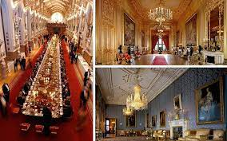
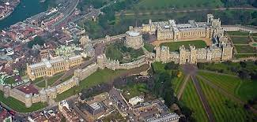

WINDSOR CASTLE
LOCATION
ㅤWindsor Castle is located in the town of Windsor in Berkshire, England. The city of Windsor is located approximately 35 kilometers west of central London. The castle is situated in a strategic position on the banks of the River Thames, offering beautiful panoramic views of the surrounding area. Its location close to London and ease of access make Windsor Castle a popular destination for tourists and a place of historical and cultural importance in England.
CURIOSITIES
ㅤ-Castle Extension: By 1500, Windsor Castle had already undergone several expansions and renovations since its original construction in the 11th century. However, it still wasn't as extensive as it currently is, with many of the buildings and structures we see today being added later.
ㅤ-Importance as a stronghold: At that time, Windsor Castle still played a crucial role as a strategic stronghold for the defense of the kingdom. It was considered an important defensive position for the English crown.
ㅤ-Presence of the Chapel of Saint George: The Chapel of Saint George, located inside the castle, was already present in the 1500s. The chapel is an outstanding example of Gothic architecture and remains a place of worship and burial for the British royal family.
ㅤ-Royal use: Windsor Castle was already used as one of the official royal residences. Monarchs of the time, such as Henry VII and Henry VIII, often spent time at the castle, along with their courts.
ㅤ-Political and social role: Windsor Castle played an important role in the political and social life of the time. It was often used to accommodate the nobility and host events such as royal banquets and celebrations.
ㅤ-Defensive structure: In the 1500s, the castle still had defensive features such as watchtowers, ramparts and a moat. These protective measures were important in a period of political instability and external threats.
ㅤ-Conservation of treasures: Windsor Castle once housed a collection of valuable treasures, including works of art, tapestries and valuables. These gems were exhibited and preserved for the appreciation of the nobility and visitors.

HISTORY
ㅤThe history of Windsor Castle dates back to the 11th century when it was built by William the Conqueror shortly after the Norman Conquest of England in 1066. The initial purpose of building the castle was to establish a strategic stronghold to protect the City of London and control the Thames Valley.
Over the centuries, the castle has been expanded and modified by different monarchs, each leaving their mark on the structure. During the reign of Henry II in the 12th century, the castle was transformed into a massive stone fortress with towers and defensive walls. Henry III and Edward III also made significant contributions, expanding the castle and adding residential and ceremonial buildings.
ㅤIn the 14th century, the castle underwent further alterations under the reign of Richard II, who built the Round Tower, an impressive circular defensive tower. Later, during the Wars of the Roses, the castle played an important role as a base for various factions.
In the 16th century, during the reign of Henry VIII, Windsor Castle underwent a significant transformation. Henry VIII built the King's Gallery, a majestic structure in the Renaissance style, and also expanded the royal apartments and St George's Chapel. During this period, the castle became an increasingly important royal residence, with regular attendance at court and ceremonial events.
ㅤOver the following centuries, Windsor Castle continued to be an active royal residence and was the birthplace and death of many British monarchs. During World War II, the castle was used as a refuge for the royal family and was protected from bombing.
Today, Windsor Castle is the official residence of Queen Elizabeth II and remains an important venue for royal ceremonies and events. It is also a popular tourist destination, where visitors can explore the royal apartments, the Chapel of St. George and the castle's beautiful gardens. With its rich history and continuing role in the life of the British monarchy, Windsor Castle is a cultural and architectural treasure.
CULTURAL IMPACT
ㅤ Windsor Castle is an iconic royal castle located in the United Kingdom. With over 900 years of history, it plays a crucial role in British culture. Its impressive architecture, ceremonial events, artistic patronage and importance as a royal residence all contribute to its cultural impact. The castle is a popular tourist destination, represents the country's historical heritage, inspires architecture and features in the media, keeping its legacy alive in popular culture.
